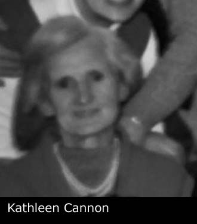

Family Record: John FOGARTY x Kathleen (Auntie Kathleen) CANNON
Family Record: John FOGARTY x Kathleen (Auntie Kathleen) CANNON - Overview
- Overview
- Chronology
- Pedigree
- Family Chart
- Descendants Chart
- Gallery
| Husband | John FOGARTY b. Between 03/1898 and 1899 | |
| Wife | Kathleen (Auntie Kathleen) CANNON | |
| Change Date | Date | 14/04/2011 |
| Time | 14:06 | |
John FOGARTY1, son of Thomas FOGARTY and Bridget MURPHY, was born between 03/1898 and 1899 in Booterstown, Dublin, Ireland. In 1901 John resided in 15 Rock Road, Booterstown, Dublin, Ireland. He resided in 1911 in 18 Emmet Square, Booterstown, Dublin, Ireland. John resided on 18/09/1952 in Blackrock, Dublin, Ireland. Kathleen (Auntie Kathleen) CANNON2. He had a partner Kathleen. No children given. |  |  |
Notes
1. Lived with parents at 15 Rock Road during 1901 census Lived with parents at 18 Emmet Square during 1911 census Paid for the the burial of a Thomas Doyle at Deansgrange in 1952; [Note Record]
2. After her husband John died she lived with her Mother. After her mother died she lived with friend Bessie.; [Note Record]
Web page generated using a registered copy of GedScape software, licensed by Mark Watkin
Web page generated using a registered copy of GedScape software (www.gedscape.co.uk), licensed to Mark Watkin